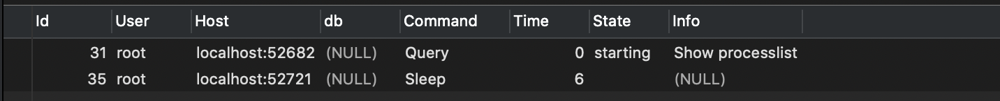

平常我們使用MySQL都是進行查詢然後資料庫返回結果
mysql > SELECT * FROM table WHERE id = 1但是我們卻不知道這句查詢語句在MySQL內部的執行過程，所以我們一起把MySQL拆解，希望藉由這個拆解過程，讓我們對MySQL有更深入的理解，這樣當我們碰到一些異常或者問題時，就可以直指本質，更快速的找出問題發生點並解決。
客戶端 → 連接器 → 分析器 → 優化器 → 執行器
↘ ↙
查詢緩存連接器
負責建立維持和管理連線、獲取權限。
mysql -u root -p一般來說command line連線的指令會是上述這句，在完成TCP握手之後，連接器會開始驗證你的身份，這時候用的就是你的帳號和密碼。
- 如果帳號或者密碼錯誤，你會收到 ”Access denied for user” 的錯誤，然後客戶端（海豚, phpmyadmin, cli, etc….）會結束此條連線請求
- 如果帳號密碼皆正確，連接器會到權限資料表查出你擁有的權限，之後這個連接的權限判斷邏輯，都會依賴此時讀到的權限。
在這邊解釋了，為什麼我們每次修改權限，都需要再次新建連線，才會讀到新的權限配置。
連接完成後，如果沒有執行任何動作，這條連線就會處於Sleep狀態

那條Sleep連線是我剛剛建立的新連線，各位如果想實際操作，可以建立新連線後，在舊有的連線中使用這句指令
mysql > show processlist #查看mysql目前的用戶連線進程如果連線太長時間沒有操作，連接器就會自動斷開連線，預設是8小時，如果需要修改可以變更 wait_tomeout。
連接被斷開之後，客戶端再次發送請求的話，就會收到 “Lost connection to MySQL server during query”的錯誤，這時候如果要繼續，就必須要重新建立新連線，然後再執行請求。
建立連線過程，通常都是比較複雜的，所以建議盡量減少使用建立連線的動作，也就是說盡量使用長連線，但是全部使用長連線的話，有可能會導致MySQL佔用記憶體上漲很快，這是因為MySQL在執行過程中臨時使用的記憶體是管理在連線對象裡面的，這些資源如果沒做其他動作，那麼只有在斷開連線的時候才會釋放，所以如果長時間累積下來，可能會導致記憶體佔用過大，被系統強行kill。
如何解決這個問題？
- 在完成一個佔用大量內存的大查詢後，斷開連線，之後再重建連線。
- 如果是使用MySQL 5.7或者是更新的版本，可以使用 mysql_reset_connection，來重新初始化連線，這個過程不需要重連或者是權限驗證，但是他會將連線恢復到剛創建完的狀態
未完……..